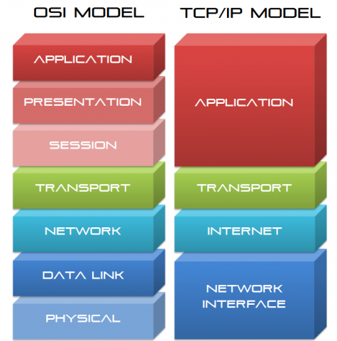

套接字
网络通信模型有两种，一个是OSI，一个是当前使用的TCP/IP模型。

在Linux系统中，物理层是通过硬件实现的，数据链路层是通过相关硬件的驱动程序实现的，网络层和传输层在内核中实现，应用层在用户空间实现。应用层侧重于不同程序实现的特有功能，TCP/IP的下三层更通用，重点是数据的传送。物理层提供设备到设备的通信，网络层提供主机到主机的通信，传输层为进程提供端到端的通信服务。传输层使用端口来区分各个进程，传输层常见的两个协议是TCP和UDP。
网络通信实际上是两个进程之间的通信，套接字(Socket)是进程通信的一种方式，允许位于不同主机（或相同主机）的不同进程进行通信以达到数据交换的目的。套接字是进程间数据流的端点，以IP协议为通信基础的套接字称为网络套接字，以本地文件系统通信的套接字称为Unix Socket。
套接字也对应用程序提供API以便于调用，最早的Socket API来自于BSD 4.2，
套接字有三种类型，一种是以TCP为基础的SOCK_STREAM，一种是以UDP为基础的SOCK_DGRAM，还有一种直接以IP为基础的rawsocket。
IANA（互联网号码分配局）将0-1023端口永久分配给固定的应用使用，叫做特权端口；1024-41951范围内的端口也是由IANA进行注册的端口，但要求不严格，可分配给开发者注册为某应用使用；41952之后的端口是客户端随机使用的端口，也叫做动态端口或私有端口，其范围由/proc/sys/ipv4/ip_local_port_range文件定义。
客户端和服务端组成一组套接字，服务端使用固定的端口监听，客户端使用随机端口。
根据所使用的地址不同，Socket Domain中Socket分为AF_INET、AF_INET6、AF_UNIX
- AF_INET：IPv4 socket Address Family
- AF_INET6：IPv6 socket Address Family
- AF_UNIX：同主机的不同进程通信
上面三种Socket每类套接字都至少提供了两种Socket数据传输机制：流（TCP）和数据报（UDP）。流可以可靠地传递并且是面向连接的，而且是无边界的；数据报是不可靠地传递，报文有边界、无连接。
与套接字相关的系统调用有：
| 系统调用 | 说明 |
|---|---|
| socket() | 创建套接字 |
| bind() | 绑定套接字 |
| listen() | 监听套接字 |
| accept() | 接受请求 |
| connect() | 请求连接建立 |
| write() | 发送 |
| read() | 接收 |
httpd的功能特性
常见的web服务器程序有httpd、nginx、Lighttpd，还有一些应用程序服务器（APP Server），可以返回动态内容，如ISS、tomcat、jboss、resin、webshpere、weblogic、oc4j。
英国Netcraft公司官网每月公布的关于网站数量和服务器市场份额的调研数据，截止2018年2月，httpd的市场占有率为27.45，排名第二。
Apache HTTP Server目前的主流版本有httpd 2.4和httpd 2.2，在 CentOS 6 默认提供的版本是2.2，CentOS 7 默认提供的是2.4。
PV和UV
PV（page view）：
UV（user view）：独立IP量
httpd的功能特性：
- 支持虚拟主机virtual host
- 支持CGI（Commmon Gateway Interface，通用网关接口）
- 支持反向代理
- 支持负载均衡
- 支持路径别名
- 有丰富的用户认证机制
- 支持第三方模块
httpd有三个很重要的特点：高度模块化、DSO和MPM机制
模块化：由core和各种modules组成
DSO机制：Dynamic Shared Object，httpd支持模块的动态装卸载
MPM机制：Multipath-Processing Modules，多路处理模块，其并非是一个模块，而是一种机制
HTTP三个MPM机制
prefork MPM
多进程模型，主进程负责接收请求但不处理请求，主进程生成多个子进程并对其进行回收等管理，每个子进程只有一个线程处理一个用户请求，即便当前没有用户请求，也会预先生成多个空闲进程，随时等待请求到达，并发请求最大不会超过1024个。
缺点：一个进程占用较多的系统资源，消耗更多内存；对高并发场景支持较差。
图

worker MPM
多进程和多线程混合模式，主进程fork若干子进程，每个子进程有多个线程
多线程模型（一个进程生成多个线程，每个线程响应一个请求），每个线程相应一个请求。一个主进程生成多个子进程，，每个子进程生成多个线程，每个线程响应一个请求；线程比起进程会更轻量，因为线程通常会共享父进程的内存空间，因此，内存的占用会减少一些。在高并发的场景下，因为比起prefork有更多的可用线程，表现会更优秀一些。
当仅使用多线程模型，如果一个线程异常会导致父进程连同其他子进程异常，为了稳定性，worker模块采用了多进程与多线程混合使用。
优点：系统资源占用比prefork小，高并发能力比prefork好。
缺点：必须考虑线程安全的问题，因为多个子线程是共享父进程的内存地址的。如果使用keep-alive的长连接方式，某个线程会一直被占据，也许中间几乎没有请求，需要一直等待到超时才会被释放。如果过多的线程，被这样占据，也会导致在高并发场景下的无服务线程可用。（该问题在prefork模式下，同样会发生）
图

-
event是基于worker MPM的，区别在于它解决了keep-alive场景下，长期被占用的线程的资源浪费问题（某些线程因为被keep-alive，空挂在哪里等待，中间几乎没有请求过来，甚至等到超时）。event MPM中，会有一个专门的线程来管理这些keep-alive类型的线程，当有真实请求过来的时候，将请求传递给服务线程，执行完毕后，又允许它释放。这样增强了高并发场景下的请求处理能力。
event MPM在遇到某些不兼容的模块时，会失效，将会回退到worker模式，一个工作线程处理一个请求。官方自带的模块，全部是支持event MPM的。
event MPM需要在Linux内核版本2.6或更高才可以运行，因为需要系统对EPoll的支持。
对于HTTPS连接，event MPM的运行模式仍然是类似worker的方式，线程会被一直占用，直到连接关闭。

httpd-2.2相关文件和功能配置
在CentOS 6中，使用rpm包安装httpd-2.2的配置文件：
主目录：/etc/httpd
主配置文件：/etc/httpd/conf/httpd.conf
补充配置文件：/etc/httpd/conf.d/
服务脚本：/etc/rc.d/inint.d/httpd
服务脚本的配置文件：/etc/sysconfig/httpd
主程序：/usr/sbin/httpd | /usr/sbin/httpd.event | /usr/sbin/httpd.worker
日志文件：/var/log/httpd/{access_log,error_log}
文档根目录（DocRoot）：/var/www/html
CGI目录：/var/www/cgi-bin
模块文件：/usr/lib64/httpd/modules
启动httpd服务时，会对当前的ip地址进行反向解析，如果反向解析的结果和当前的主机名不对应是会报错。实验中可以编辑/etc/host使ip地址和主机名对应。
验证httpd服务是否在80端口监听ss -tnlp
httpd主进程的属主是root，工作进程的属主是普通用户apache，因为要在内核中注册使用小于1023的端口，只有管理员有权限。主进程不响应请求，由工作进程响应。
httpd的主配置文件大致上由三个部分（section）组成，section2和section3不要同时使用
section 1：Global Environment
section 2：‘Main’ Server configuration，主机配置，仅提供一个站点
section 3：Virtual Hosts，虚拟站点配置
修改配置文件后，应该进行配置文件语法检测service httpd configtest或httpd -t，绝大多数的配置修改后，可以通过service httpd reload或systemctl reload httpd来生效，如果修改了监听端口的地址或端口，必须要重启服务才能生效。
配置文件中的配置选项
修改监听IP和端口
1
Listen [IP:]PORT
省略IP表示监听本机所有IP；Listen可重复出现多次
持久连接（Persistant Connection）
1
2
3KeepAlive Off|On
MaxKeepAliveRequests 100
KeepAliveTimeout 15知道HTTP1.0中，一次连接只能传输一次HTTP请求，而KeepAlive参数用于支持HTTP1.1中一次连接多次传输功能，每个资源获取完成后服务端不会立即断开，而是继续等待此连接的请求。
当启用持久连接功能后，需要设置MaxKeepAliveRequests和KeepAliveTimeout参数的值。这两个参数用来出发断开持久连接。
MaxKeepAliveRequests设定一次持久连接可以进行的HTTP请求的最大连接数。值为0时，表示不限制资源请求数。
KeepAliveTimeout用来设定一个连接的超时时长，在httpd-2.2中默认为100秒，在httpd-2.4中还支持毫秒级定义。
开启持久连接后，对于并发访问较大的服务器，持久连接功能会使有些请求得不到响应。可以使用较短的持久连接时间来减少持久连接加高并发的影响。
MPM设置
httpd-2.2不支持同时编译多个模块，在编译时只能选择一种MPM，RPM安装包中提供了3个二进制程序文件，分别实现了对MPM不同机制的支持。
使用
ps -aux | grep httpd查看当前运行的httpd的类型 ，默认运行的是/usr/sbin/httpd，使用的prefork。使用
httpd -l查看编译的静态模块，使用httpd -M查看当前httpd加载的所有模块（静态编译模块+动态装载模块）。要更换httpd主程序，在脚本配置文件
/etc/sysconfig/httpd中启用HTTPD=/usr/sbin/httpd.worker，重启后生效。在httpd主配置文件中，使用
<IfModule MODULE>...</IfModule>判断运行的模块，当模块匹配，参数即生效。在httpd-2.2主要使用的MPM有两种，一个是prefork，另一个是worker。
1
2
3
4
5
6
7
8
9
10
11
12
13
14
15
16
17<IfModule prefork.c>
StartServers 8 默认启动的工作进程数
MinSpareServers 5 最少空闲进程数
MaxSpareServers 20 最大空闲进程数
ServerLimit 256 最大活动进程数
MaxClients 256 并发请求的最大数，不能大于ServerLimit
MaxRequestsPerChild 4000 #每个子进程在生命周期内所能服务的最大请求个数。达到指定的数值后杀死进程，重新生成新的进程，当然如果一个子进程在重复使用没有问题的情况下，可以将数值调大。
</IfModule>
------------------------------
<IfModule worker.c>
StartServers 4 启动的子进程数
MaxClients 300 并发请求的最大数
MinSpareThreads 25 最小空闲线程数
MaxSpareThreads 75 最大空闲线程数
ThreadsPerChild 25 每个进程的线程数，子进程在启动时建立这些线程后就不再建立新的线程了
MaxRequestsPerChild 0 每个子进程能够处理的最大请求数，0表示不限制
</IfModule>DSO设置
DSO机制在配置文件中使用LoadModule指定加载模块，一般格式是：
LoadModule <mod_name> <mod_path>。指定模块路径可以使用相对路径，相对路径指的是相对于httpd主目录（/etc/httpd）的路径。/etc/httpd/modules是一个符号链接指向模块目录。使用
httpd -M可以查看所有加载的DSO模块以及非DSO模块。定义‘Main’ server的文档页面路径
1
DocumentRoot "/var/www/html"
DocumentRoot定义的路径为URL路径的起始位置，用户请求的URL就被映射到指定目录下的网页文件。
这个目录下的子目录，以及使用符号连接指出的文件和目录都能被浏览器访问，只是要在URL上使用同样的相对目录名。
符号连接虽然逻辑上位于根文档目录之下，但实际上可以位于计算机上的任意目录中，因此可以使客户程序能访问那些根文档目录之外的目录，这在增加了灵活性的同时但减少了安全性。Apache在目录的访问控制中提供了FollowSymLinks选项来打开或关闭支持符号连接的特性。
站点访问控制
站点访问控制可以基于文件系统路径或URL路径，对访问资源进行控制
文件系统路径的访问控制：
1
2
3<Directory ""> </Directory>
<File ""></File>
<FileMatch ""></FileMatch>URL路径的访问控制：
1
<Location ""></Location>
对于来源控制可以基于来源地址或账号进行控制。
使用“Directory + 基于来源地址”实现访问控制
1
2
3
4<Directory />
Options FollowSymLinks
AllowOverride None #是否查找.htacess文件作为配置文件，如果设置为none,那么服务器将忽略.htacess文件，如果设置为All,那么所有在.htaccess文件里有的指令都将被重写。
</Directory>使用\
\ ，可以对DocumentRoot下的目录进行属性的定义。也可以使用\ \，启用正则表达式，不过速度慢，也可以使用\ \基于URL配置属性定义。如果某要配置其属性的URL能映射到某具体文件系统路径，建议使用Directory。 (1)options：定义用户对此目录资源的访问选项，可以使用None或ALL，或Indexes，Includes，FollowSymLinks，SymLinksifOwnorMatch，ExecCGI，MultiViews的组合。
| options | 说明 |
| ——————– | ————————————— |
| Indexs | 缺少指定的默认页面时，允许将目录中的所有文件以列表形式返回给用户。危险！ |
| FollowSysLinks | 允许访问符号链接所指向的原始文件 |
| None | 所有的选项都不启用 |
| All | 启用所有选项 |
| ExecCGI | 允许使用mod_cgi模块执行CGI脚本 |
| Includes | 允许使用mod_include模块实现服务器端包含(SSI) |
| Multiviews | 允许使用mod_negotiation实现内容协商 |
| SysLinksIfOwnerMatch | 在链接文件属主属组域原始文件的属主属组相同时，允许访问符号链接所指向的原始文件 |(2)基于来源地址的访问控制
Order：检查次序，也就是设置默认访问策略。
Order allow,deny表示默认策略为Deny，只有明确指定Allow的，才能访问，类似于白名单。Allow from：允许访问的来源地址（IP地址或网段）
Deny from：拒绝访问的来源地址（IP地址或网段）
二者都能匹配到或者都没有匹配到都以默认规则，即后者定义的行为。单个匹配到的，就按匹配的规则执行Deny或Allow
定义默认主页面
1
DirectoryIndex index.html index.html.var
设置多个主页，按照从左至右第一个能访问的页面
日志设定
Apache web server中有两种日志：错误日志和访问日志
1
2
3
4
5
6
7ErrorLog logs/error_log 错误日志文件位置
LogLevel warn #设定写入日志级别
LogFormat "%h %l %u %t \"%r\" %>s %b \"%{Referer}i\" \"%{User-Agent}i\"" combined
LogFormat "%h %l %u %t \"%r\" %>s %b" common
LogFormat "%{Referer}i -> %U" referer
LogFormat "%{User-agent}i" agent
CustomLog logs/access_log combined 访问日志文件路径和日志格式日志级别由低到高：debug->info->notice->warn->error->crit->alert->emerg
CustomLog定义访问日志的文件路径和日志格式。定义好的日志格式，可以使用一个名称进行识别，使用CustomLog指定日志格式时使用定义的名称即可，默认使用的是combined。
1
2
3
4
5
6
7
8
9
10h：Remote Host客户端IP地址
l： Remote logname (from identd, if supplied)，远程登录名，-表示为空
u:：Remote user, (from auth; may be bogus if return status (%s) is 401)。认证时的远程用户名，-表示为空
t：Time the request was received (standard english format)，服务器收到请求的时间
r：First line of request，请求报文的首行信息(method url version)
>s: 响应状态码
b: 响应报文的长度，单位是字节，不包括响应报文首部
{Referer}i：请求报文当中"referer"首部的值；当前资源的访问入口，即从哪个页面中的超链接跳转而来的
{Header_Name}i：记录指定请求报文首部的内容
{User-Agent}i：请求报文当中"User-Agent"首部的值；即发出请求用到的应用程序，通常是浏览器，也可是压力测试工具，或是爬虫工具路径别名
使用alias定义URL映射的文件系统路径，可以访问不在DocumentRoot目录下的文件
1
2alias URL/ /path/to/dir/ #斜线要对应，有则全有，无则全无
alias /bbs/ "/forum/htdocs"设定默认字符集
1
AddDefaultCharset UTF-8
基于用户的访问控制
基于用户的访问控制，当客户端向服务端发起请求时，服务端会进行认证质询（WWW-Authentication），服务端返回状态码为401的响应报文，拒绝用户请求，并说明要求用户提供账号和密码（弹出表单）。
客户端进行认证（Authorization），填入账号和密码，再次发送请求报文，认证通过，则服务器端发送响应资源。
用于认证的用户账号和密码使用的是虚拟账号，仅用于访问某服务时用到的认证标识。认证类型有两种，一种是basic认证，一种是digest认证。basic认证帐号和密码是明文发送的，digest认证将帐号密码hash编码后发送，但很多浏览器不支持digest认证，大部分浏览器使用的basic认证。目前这种HTTP认证方法不常用，常用的是应用程序自带的表单认证。在模块中是以auth_开头的模块，共有两个：
- 认证提供者（authentication provider）：帐号和密码的存放位置，在模块中以authn_开头
- 授权机制（Authorization）用来定义根据什么授权，在模块中以authz_开头
需要用户认证后才能访问的路径称为安全域，每个安全域应该通过名称对其进行标识，并用于告知用户认证的原因。
示例：根据用户和组进行授权，基于文件的basic认证
（1）定义安全域
1
2
3
4
5
6
7
8
9<Directory "/var/www/html/admin">
Options None
AllowOverride AuthConfig #None也可以
AuthType Basic #认证类型
AuthName "Private Area" #质询时弹出窗口的提示信息(自定义文字)
AuthBasicProvider file #可省略，下面一条就说明了使用File
AuthUserFile “/etc/httpd/conf.d/.htpasswd” #可由htpasswd命令生成
Require valid-user|tom,simon #valid-user允许账号文件中的所有用户登录访问
</Directory>（2）提供账号和密码存储文件
使用
htpasswd命令创建AuthUserFile，一般用法：htpasswd [options] passwordfile username| 选项 | 说明 |
| —- | —————————– |
| -c | 自动创建passwordfile，仅在添加第一个用户时使用 |
| -m | 使用md5加密用户密码 |
| -s | 使用sha-1加密用户密码 |
| -D | 删除指定用户 |文件创建完毕后，重载httpd
service httpd reload后生效（3）如果用户较多，也可以使用基于组认证
1
2
3
4
5
6
7
8
9
10<Directory "/var/www/html/admin">
Options None
AllowOverride AuthConfig #None也可以
AuthType Basic #认证类型
AuthName "Private Area" #质询时弹出窗口的提示信息(自定义文字)
AuthBasicProvider file #可省略，下面一条就说明了使用File
AuthUserFile "/etc/httpd/conf.d/.htpasswd"
AuthGroupFile "/etc/httpd/conf.d/.htgroup"
Require webadmin GRP_Name #指定允许访问的组
</Directory>用户和密码文件依然由
htpasswd创建，组文件手动创建，每一行定义一个组：GRP_Name: use1 use2 user3 ...基于用户和基于组的认证，在配置文件中出现一个即可。
虚拟主机
httpd支持一个物理服务器支持多个站点，区分虚拟主机可以基于不同IP、不同端口或FQDN。
基于IP：为每个虚拟主机准备至少一个IP地址
基于端口：为每个虚拟主机准备至少一个专用端口。基本不会使用此方法
基于FQDN：为每个虚拟主机准备至少一个专用的hostname。（在请求首部中可以得到请求的Hostname）
同一物理主机上的多个虚拟主机，对于上述的区分方法，不同的虚拟机可以使用不同的区分方法。
一般情况下，虚拟主机不要和Main server混用，所以，要使用虚拟主机，先禁用中心主机（
注释DocumentRoot）。在启用虚拟主机的情况下，如果客户端请求的URL是物理主机的ip地址，httpd则会将配置文件的第一虚拟主机返回给客户端，当然可以定义默认的虚拟主机。三种虚拟主机的方法可以混合使用，大部分用在中心主机的配置都可以在虚拟主机中使用
基于IP地址区分虚拟主机
1
2
3
4
5
6
7
8
9
10
11
12
13
14<VirtualHost 172.16.100.6:80>
ServerName web1.jsp.com
DocumentRoot "/vhosts/web1/htdocs"
<Directory " ">
options None
</Directory>
CustomLog ...... combined
</VirtualHost>
<VirtualHost 172.16.100.7:80>
ServerName web2.jsp.com
DocumentRoot "/vhosts/web2/htdocs"
CustomLog ...... combined
</VirtualHost>基于端口区分虚拟主机
1
2
3
4
5
6
7
8
9
10
11<VirtualHost 172.16.100.7:80>
ServerName web2.jsp.com
DocumentRoot "/vhosts/web2/htdocs"
CustomLog ...... combined
</VirtualHost>
<VirtualHost 172.16.100.7:8080>
ServerName web3.jsp.com
DocumentRoot "/vhosts/web3/htdocs"
CustomLog ...... combined
</VirtualHost>基于FQDN区分虚拟主机
在httpd-2.2中，使用FQDN方式的虚拟主机，要在配置文件中将
NameVirtualHost *：80启用，并且虚拟主机的定义格式与NameVirtualHost的格式保持一致1
2
3
4
5
6
7
8
9
10
11
12
13
14
15
16
17
18NameVirtualHost 172.16.100.6:80
<VirtualHost 172.16.100.6:80>
ServerName web1.jsp.com
DocumentRoot "/vhosts/web1/htdocs"
CustomLog ...... combined
</VirtualHost>
<VirtualHost 172.16.100.6:80>
ServerName web2.jsp.com
DocumentRoot "/vhosts/web2/htdocs"
CustomLog ...... combined
</VirtualHost>
<VirtualHost 172.16.100.6:80>
ServerName web3.jsp.com
DocumentRoot "/vhosts/web3/htdocs"
CustomLog ...... combined
</VirtualHost>httpd的状态页面
status页面可以通过web页面进行显示当前web服务器的请求响应信息等，status只能使用Location进行定义，因为status在文件系统中没有文件。
在apache中有很多处理器，当文件被调用时，apache在内部的表现形式，一般来说，每种类型都有其隐式处理器。status页面信息需要指定处理器，需要加载模块status_mod，显示定义使用的处理器SetHandler
1
2
3
4
5
6<Location /server-status>
SetHandler server-status
Order deny,allow
Deny from all
Allow from 192.168.2
</Location>页面压缩
使用mod_deflate模块压缩页面可以优化传输速度，在httpd-2.2中默认启用。压缩要有一个过滤器，来指定压缩文件类型。
页面压缩的适用场景
- 页面压缩节约带宽，但是额外消耗CPU，同时，较老的浏览器可能不支持
- 压缩适用于压缩的文件，比如文件文本
如果在httpd的主配置文件中，没有关于输出过滤器的配置，可以在/etc/httpd/conf.d/目录下建立一个配置文件deflate.conf：
1
2
3
4
5
6
7
8
9
10
11
12
13
14
15
16
17
18
19
20
21
22
23
24
25SetOutputFilter DEFLATE #启动输出过滤器为deflate
# mod_deflate configuration
# Restrict compression to these MIME types #对那些格式的文档进行压缩
AddOutputFilterByType DEFLATE text/plain
AddOutputFilterByType DEFLATE text/html
AddOutputFilterByType DEFLATE application/xhtml+xml
AddOutputFilterByType DEFLATE text/xml
AddOutputFilterByType DEFLATE application/xml
AddOutputFilterByType DEFLATE application/x-javascript
AddOutputFilterByType DEFLATE text/javascript
AddOutputFilterByType DEFLATE text/css
# Level of compression (Highest 9 - Lowest 1) #定义压缩比
DeflateCompressionLevel 9
# Netscape 4.x has some problems. #指定不使用压缩的浏览器
BrowserMatch ^Mozilla/4 gzip-only-text/html
# Netscape 4.06-4.08 have some more problems
BrowserMatch ^Mozilla/4\.0[678] no-gzip
# MSIE masquerades as Netscape, but it is fine
BrowserMatch \bMSI[E] !no-gzip !gzip-only-text/htmlHTTPS（http over tls）
http是明文传输的，要加密传输报文，需要借助于ssl/tls，对内容进行加密。使用ssl/tls后，URL的方案使用https://，监听在tcp/443端口。http是文本协议，https是二进制格式的协议，数据加密后是二进制编码。ssl会话是基于ip地址的，单IP主机，仅可以使用一个https虚拟主机。httpd基于mod_ssl模块实现对ssl的支持。
SSL会话的简要过程
(1)客户端发送可供选择的加密方式，并向服务器请求证书
(2)服务器端选定加密方式并连同证书一同发送给客户端
(3)客户端证书验证
如果信任给服务端签发证书的CA：
a.验证证书来源的合法性：用CA的公钥解密证书上的数字签名
b.验证证书内容的合法性：完整性验证
c.验证证书的有效期
d.检查证书是否被吊销
e.证书中拥有者的名字与访问的目标主机是否一致
(4)客户端生成临时会话密钥(对称密钥)，并使用服务端公钥加密此数据发送给服务器，完成密钥交换
(5)服务端用接收到的会话密钥加密用户请求的资源，响应给客户端
示例：配置httpd支持https
(1)为服务器申请证书
1.1创建CA
1.2服务器创建证书签署请求
1.3CA签证
(2)配置httpd支持使用ssl以及使用证书
1
2
3
4
5
6yum -y install mod_ssl
vim /etc/httpd/conf.d/ssl.conf
DocumentRoot
ServerName
SSLCertificateFile
SSLCertificateKeyFile(3)测试基于https访问相应主机
1
openssl s_client [-connect host:port] [-cert filename] [-CApath directory] [-CAfile filename]
httpd自带的工具程序
htpasswd：basic认证基于文件的实现，管理用户和密码文件
apachectl：httpd自带的服务控制工具，支持start，stop
apxs：有httpd-devel包提供，扩展httpd使用第三方模块工具
rotatelogs：日志滚动工具
suexec：访问某些有特殊权限配置的资源时，临时切换至指定用户运行
ab：apache benchmark
http压力测试工具
httpd-2.4相关文件和功能配置
在CentOS 7中，默认提供的apache版本是httpd-2.4。httpd-2.4支持了一些新的特性：
(1)MPM支持运行时动态装载；以模块形式按需装载
(2)支持event MPM
(3)支持异步读写
(4)支持每模块及每个目录分别使用各自的日志级别
(5)每请求配置
(6)增强版的表达式分析器
(7)支持毫秒级的KeepAlive timeout
(8)基于FQDN的虚拟主机不再需要NameVirtualHost指令
(9)支持用户自定义变量
新模块：mod_proxy_fcgi、mod_ratelimit、mod_request、mod_remoteip。
httpd-2.4修改了某些配置方法，不再支持使用Order定义基于IP的访问控制，统一使用require。